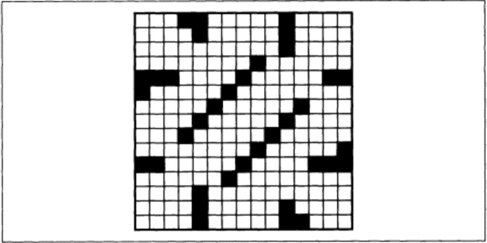

一个综合示例
Table of Contents
1 在本章：
纽约时报规则
数据表示
用户界面
建立模式
追踪未授权的修改
解析Buffer
词语查找器
本章是我们编程示例的终点。实现一个填字游戏编辑器（crossword puzzle editor）是个好主意–显然Emacs的设计者并没有预先设计这一功能，但这可以被实现。设计和实现Crossword模式将会展示出Emacs作为应用构建工具的真正潜力。
在为填字游戏编辑器设计完数据模型之后，我们将会为它创建一个用户界面，创建用来展示我们数据模型的函数并且将输入限制在我们允许的范围内。我们将会编写插入到Emacs菜单中的命令以及用于跟其他进程通讯的命令。通过这些，我们将会利用我们前面学到的Lisp技术来执行复杂的逻辑以及字符串处理。
2 纽约时报规则
我是填字游戏的狂热粉丝。我曾经每天都做纽约时报的填字游戏。我经常会思考构建一个填字游戏需要哪些技术，并且希望我自己动手完成它。最初我试图用方格纸来做，但是我很快发现填字游戏的创建包含如此多的尝试和错误（至少对我如此）以至于我才做到中间，我的橡皮已经把纸擦透了！最终我选择编写一个计算机程序来帮助我创建填字游戏。
填字游戏表格（diagram），或者说网格（grid），包含着“空格（blank）”以及“障碍（block）”。空格是一个可能填充了字母的空方格。障碍则是一个用来分隔单词的没有填写字母的黑色方块。优秀的填字游戏设计者将会尽可能少的使用障碍。
Crossword模式将会延用被我称作“纽约时报规则”的填字游戏规则（当然这与其他的填字游戏应该是相似或者相同的）：
- 网格是一个nxn的方块，n为奇数。纽约时报的每日游戏为15*15，而周末则为21*21。
网格符合“180度对称”，即如果你把网格旋转180度，那么空格和障碍仍然保持相同的位置。[40]以数学语言来说，这表示如果网格square(x, y)是一个空白的话，那么square(n-x+1, n-y+1)也一定是（n代表网格的宽度，x和y从0开始）；如果(x, y)是一个障碍，那么(n-x+1, n-y+1)也一定是。如图10-1展示的180度对称的例子。

图10-1. 一个180度对称的例子
- 游戏中的所有单词必须至少包含2个字母。（实际上，我被告知纽约时报从未使用过少于三个字母的单词，但是为了简化，我们使用两个。）
3 数据表示
让我们以构建数据表示作为开始。一个明显的方法是使用一个二元数组来存储填字游戏的数据，或者说矩阵。Emacs Lisp并没有这种数据类型，但是我们可以使用向量（vector）来创建一个。
3.1 向量（Vectors）
Lisp的向量跟列表类似，即它是0个或多个子表达式（包括嵌套向量或者列表）的序列。但是，向量允许对其元素的随机访问，而列表却必须从头到尾遍历来找到一个元素。（但并不是说向量就比列表更好。向量不像列表一样可以加长或者缩短。所以就像常说的那样，要因地制宜。）
向量使用中括号来代替小括号：
[a b c ...]
向量是自运算的（self-evaluating）；也就是说，向量的运算结果是向量自身。它的子表达式并不会被求值。所以如果你写
[a b c]
你将会得到一个包含着三个符号的向量，a，b，和c。如果你希望向量包含变量a，b和c的值，那么你必须使用vector函数来构建向量：
(vector a b c) -> [17 37 42] ; 或者其他什么值
3.2 矩阵包
使用向量来设计矩阵包是清晰直观的。我们指定一个向量来表示矩阵的行，而每一行都是一个代表列的向量。我们会这样创建：
(defun make-matrix (rows columns &optional initial) "Create a ROWS by COLUMNS matrix." (let ((result (make-vector rows nil)) (y 0)) (while (< y rows) (aset result y (make-vector columns initial)) (setq y (+ y 1))) result))
参数initial指定了一个Lisp表达式作为矩阵内每个元素的初始值。第一次调用make-vector创建了一个填充了nil的向量，长度为rows。然后我们将每个nil替换为一个新的长度为columns的向量。函数aset用来设置向量的元素而aref用来获取。[41]向量的索引从0开始。调用(asset vector index value)会将vector中的第index个元素设置为value。调用(aref vector index)会返回位置为index的值。
在while循环里调用的make-vector会将每个嵌套向量的元素设置为initial，所以在make-matrix的最后，result是一个包含着rows个嵌套向量的向量，而每个嵌套向量都是由columns个initial组成的。
为什么不像下面这样更简单的编写这个函数呢：
(defun make-matrix (rows columns &optional initial) "Create a ROWS by COLUMNS matrix." (make-vector rows (make-vector columns initial))) ; 错啦！
原因是里面的那个make-vector只会产生一个新的向量。外面的调用会使用这个向量作为外面向量的每个元素的初始值。换句话说，外面向量的每个元素将会共享同一个内部的向量，而我们希望的是每个元素的值是各不相同的嵌套向量。
现在我们定义好了矩阵的结构，那么定义它的基本操作就很简单了：
(defun matrix-set (matrix row column elt) "Given a MATRIX, ROW, and COLUMN, put element ELT there." (let ((nested-vector (aref matrix row))) (aset nested-vector column elt))) (defun matrix-ref (matrix row column) "Get the element of MATRIX at ROW and COLUMN." (let ((nested-vector (aref matrix row))) (aref nested-vector column)))
得到矩阵的宽和高的函数也许有用：
(defun matrix-columns (matrix) "Number of columns in MATRIX." (length (aref matrix 0))) ; 子向量的长度 (defun matrix-rows (matrix) "Number of rows in MATRIX." (length matrix)) ; 外部向量的长度
当函数的定义非常短，就像上面这四个，通常使用defsubst而不是defun把它们转换为内联函数（inline functions）是个好主意。使用defsubst定义的内联函数与defun定义的函数的功能一样，除了在编译时对于内联函数的调用会被替换为函数本身。这有一个主要的好处：在运行时，当前函数并不需要建立一个对其他函数的调用。这会稍微快一点，但是如果是在成千上万次的循环中的话，叠加起来还是很可观的。不幸的是，这么做也有代价。首先每次调用都会拷贝一份，因此这会增加内存的占用。另一个是如果你修改了内联函数的定义，其他的定义仍然会保持编译文件里的那一份。（因此可以说，defsubst与C++的内联函数相同，或者与C语言中的宏函数相同。）
我们可以将上面的代码放到matrix.el中，在文件的最后添加一行(provide 'matrix)，然后在之后的程序中通过(require 'matrix)使用它。
3.3 矩阵在填字游戏中的变化
现在让我们考虑一个填字游戏网格，也就是一种特殊的矩阵。其中的每个格子只有如下四种状态：
- 空的，表示我们会向其中填写一个字母或者一个障碍。
- 半空，表示我们会向其中填写一个字母而不是一个障碍（因为180度对称的原因）。
- 填充了一个障碍。
- 填充了一个字母。
让我们使用nil表示一个格子是空的，符号letter表示必须填写字母的半空格子，符号block表示一个包含着障碍的格子，以及字母本身（在Emacs中以数字表示，即它的ASCII码）表示一个包含着字母的格子。
根据上面的定义，让我们使用矩阵来为填字游戏网格定义一种新的数据类型。
(require 'matrix) (defun make-crossword (size) "Make a crossword grid with SIZE rows and columns." (if (zerop (% size 2)) ; 是偶数吗？（%是取余函数） (error "make-crossword: size must be odd")) (if (< size 3) ; size是不是太小了？ (error "make-crossword: size must be 3 or greater")) (make-matrix size size nil)) (defsubst crossword-size (crossword) "Number of rows and columns in CROSSWORD." (matrix-rows crossword)) ; 或者用matrix-columns，都一样 (defsubst crossword-ref (crossword row column) "Get the element of CROSSWORD at ROW and COLUMN." (matrix-ref crossword row column)) (defsubst crossword--set (crossword row column elt) "Internal function for setting a crossword grid square." (matrix-set crossword row column elt))
函数crossword–set名字中间使用了双横线。这是一种习惯上定义“私有”函数的方式，它表示这个函数并不是包声明的编程接口。在这个例子里，crossword–set是私有的，因为它并没有实现我们希望填字游戏网格所具有的纽约时报规则。Crossword包的用户将不会直接使用crossword–set；它们会直接使用下面定义的crossword-store-letter，crossword-store-block，以及crossword-clear-cell。只有Crossword包自身以及一些用于判断180度对称和单词长度大于2的规则才会使用crossword–set。
3.4 使用Cons Cells
让我们创建一个概念“兄弟（cousin）”来表示一个给定格子的对称格子。
(defun crossword-cousin-position (crossword row column) "Give the cousin position for CROSSWORD ROW and COLUMN." (let ((size (crossword-size crossword))) (cons (- size row 1) (- size column 1))))
这个函数会以dotted pair的方式返回兄弟格子的行、列值（参照第6章中列表细节的章节）：（cousin-row . cousin-column）。下面是两个直接获取和设置兄弟格子的函数：
(defun crossword-cousin-ref (crossword row column) "Get the cousin of CROSSWORD's ROW,COLUMN position." (let ((cousin-position (crossword-cousin-position crossword row column))) (crossword-ref crossword (car cousin-position) (cdr cousin-position)))) (defun crossword--cousin-set (crossword row column elt) "Internal function for setting the cousin of a cell." (let ((cousin-position (crossword-cousin-position crossword row column))) (crossword--set crossword (car cousin-position) (cdr cousin-position) elt)))
注意到crossword–cousin-set是另一个名字中间有双横线的“私有”函数。
现在让我们为纽约时报规则创建用来储存障碍和字母的函数。首先，字母。当向一个格子中填写一个字母的时候，我们必须保证格子的兄弟已经包含了一个字母（我们可以使用numberp来检测）。如果它没有，我们必须在那里存储一个符号letter：
(defun crossword-store-letter (crossword row column letter) "Given CROSSWORD, ROW, and COLUMN, put LETTER there." (crossword--set crossword row column letter) (if (numberp (crossword-cousin-ref crossword row column)) nil (crossword--cousin-set crossword row column 'letter)))
插入障碍稍微简单一点：
(defun crossword-store-block (crossword row column) "Given CROSSWORD, ROW, and COLUMN, put a block there." (crossword--set crossword row column 'block) (crossword--cousin-set crossword row column 'block))
现在让我们编写一个用来清空格子的函数。当清空一个格子时，有下面几种可能的情况：
- 格子和它的兄弟都包含着字母。如果是的话，格子变成“半空”状态而兄弟不受影响。
- 格子和它的兄弟都包含着障碍。如果是的话，格子和兄弟都清空。
- 格子已经是半空状态（因为它的兄弟包含着一个字母。）如果这样的话，什么都不发生。
- 格子包含着一个字母但它的兄弟是半空的。如果这样的话，两个格子都清空。
- 格子和兄弟都是空的。如果这样，什么都不发生。
我们可以使用一个简单的规则来处理这情况：如果格子的兄弟包含一个字母，那么格子变为半空并且兄弟不受影响；否则格子自身和它的兄弟都清空。下面就是实现的代码。
(defun crossword-clear-cell (crossword row column) "Erase the CROSSWORD cell at ROW,COLUMN." (if (numberp (crossword-cousin-ref crossword row column)) (crossword--set crossword row column 'letter) (crossword--set crossword row column nil) (crossword--cousin-set crossword row column nil)))
现在看一下nxn（n是奇数）网格中间的方格，它的兄弟是它自己。这表示我们需要对crossword-clear-cell做一点小的修正。中间的方格一定不能设置成符号letter。（幸运的是，crossword-store-block和crossword-store-letter仍然能够正确地工作。）
(defun crossword-clear-cell (crossword row column) "Erase the CROSSWORD cell at ROW,COLUMN." (let ((cousin-position (crossword-cousin-position crossword row column))) (if (and (not (equal cousin-position (cons row column))) (numberp (crossword-ref crossword (car cousin-position) (cdr cousin-position)))) (crossword--set crossword row column 'letter) (crossword--set crossword row column nil) (crossword--set crossword (car cousin-position) (cdr cousin-position) nil))))
在这个版本里，只有当cousin-position不等于(row . column)的时候格子才会被设置为letter–也就是说，格子本身并不是自己的兄弟。如果格子是自己的兄弟，或者它的兄弟不包含字母，那么（与前一个版本一样）将它与它的兄弟都设置为nil。最后一个crossword–set对于中间的格子来说是多余的，但也并没有什么副作用。注意我们在函数的开头计算了兄弟的位置，这样我们使用crossword-ref替代了crossword-cousin-ref，使用crossword–set替代了crossword–cousin-set，这样就避免了对于兄弟位置的多次求值。
3.5 单字母单词
单字母单词会在一个符合“障碍，非障碍，障碍”的行中出现；或者当一个非障碍的格子出现在障碍与边界之间时出现。下面这个函数用来检测一个给定的方格是不是一个单字母单词。
(defun crossword-one-letter-p (crossword row column) "Is CROSSWORD cell at ROW,COLUMN a one-letter word?" (and (not (eq (crossword-ref crossword row column) 'block)) (or (and (crossword-block-p crossword (- row 1) column) (crossword-block-p crossword (+ row 1) column)) (and (crossword-block-p crossword row (- column 1)) (crossword-block-p crossword row (+ column 1))))))
这个逻辑有一点复杂，但是我们可以用第三章中学到的技术来理解这种表达式：即每次深入一层子表达式：
(and ...)
当crossword-one-letter-p的子表达式的结果都为true时函数将返回true，否则返回false。
(and (not ...) (or ...))
“如果某些事情不为真并且其他的一些事情为真则返回真。”
(and (not (eq ...)) (or (and ...) (and ...)))
“如果一些事情不等于另一些并且一些事情都为真或者另一些事情都为真则返回真。”
(and (not (eq (crossword-ref crossword row column) 'block)) (or (and (crossword-block-p crossword (- row 1) column) (crossword-block-p crossword (+ row 1) column)) (and (crossword-block-p crossword row (- column 1)) (crossword-block-p crossword row (+ column 1)))))
“如果当前的格子不是障碍并且其上面的格子和下面的格子是障碍或者左面的格子和右面的格子是障碍则返回真。”这里包含着一个小技巧：crossword-block-p在访问边界外的方格时则认为它们包含障碍。
下面是crossword-block-p的定义：
(defun crossword-block-p (crossword row column) "Does CROSSWORD's ROW,COLUMN cell contain a block?" (or (< row 0) (>= row (crossword-size crossword)) (< column 0) (>= column (crossword-size crossword)) (eq (crossword-ref crossword row column) 'block)))
4 用户界面
现在我们有了一整套用来根据我们制定的规则来处理填字游戏数据结构的函数；但是还没有提供方法让用户与填字游戏网格进行交互。我们必须编写用户界面，这包括多个用来操作填字游戏的命令以及用来实时显示填字游戏网格的方法。
4.1 显示
让我们选择一种用来在Emacs buffer中显式填字游戏网格的方法。
网格的每一行在buffer中都被表示为一行。但是对于网格中的列，应该占用屏幕上的两列–这会使网格在大多数显示器上显得更方正。（在大多数字体里，一个字母的高度会比宽度高很多，这会使得一个nxn的字符块看起来非常窄。）
空格子会用点号（.）表示。障碍用井号（#）表示。半空格子用问号（?）表示。当然，包含字母的格子用字母自身表示。
下面这个方法会把一个网格插入到当前buffer里。它不会清空buffer，也不会放置光标；这应该留给这个函数的调用者来做，我们稍后会定义他们。
(defun crossword-insert-grid (crossword) "Insert CROSSWORD into the current buffer." (mapcar 'crossword-insert-row crossword))
回忆我们在第六章中其他有用的列表函数一节中讲到的mapcar会把一个方法应用到列表中的每个元素上。而这对向量也有效；因为crossword是一个包含着行的向量，所以crossword-insert-grid对网格的每一行调用了cross-insert-row。
下面是上面用到的crossword-insert-row的定义：
(defun crossword-insert-row (row) "Insert ROW into the current buffer." (mapcar 'crossword-insert-cell row) (insert "\n"))
这与上面的工作方式一样，即对每行中的每个格子调用了crossword-insert-cell。在行的最后，我们另起一行。
最后，下面是crossword-insert-row所需要的crossword-insert-cell：
(defun crossword-insert-cell (cell) "Insert CELL into the current buffer." (insert (cond ((null cell) ".") ((eq cell 'letter) "?") ((eq cell 'block) "#") ((numberp cell) cell)) " "))
这会插入两个字母；一个点号，问号，井号或者一个字母；后面跟着一个空格（这会使一个格子在屏幕上占有两列）。第一个字符插入什么用一个cond结构来确定，也就是if的一个变体。cond的每一个参数被称作子句（clause），每个子句是一个列表。每个子句的第一个元素被称为条件（condition），会按次序执行。当一个子句的条件运算结果为真时，那么子句剩下的元素（如果存在的话）就会被执行，而最后一个表达式的值会作为cond的返回值。成功执行的子句后面的子句会被忽略。
(cond ((condition1 body ...) (condition2 body ...) ...))
如果你希望cond中包含一个“else”子句–当其他子句都不为真的时候执行–你可以在最后添加一个条件为真的子句：
(cond ((condition1 body ...) (condition2 body ...) ... (t body ...)))
函数insert会将任意数量的字符串或者字母插入到当前的buffer里；这也就是为什么我们可以向它传递格子的值，不管是数字、“ ”、或者字符串来插入。
4.2 放置光标
让我们继续构建我们的模式一定会用到的组件。
现在我们可以展示填字游戏网格了，我们还应该提供一种方法来把光标放到任意一个网格里。光标的位置向用户展示了下一次操作将会影响哪个格子。下面这个函数假定网格已经画到了当前的buffer里，并且它起始于(point-min)。[42]
(defun crossword-place-cursor (row column) "Move point to ROW,COLUMN." (goto-char (point-min)) (forward-line row) (forward-char (* column 2)))
下一步，当用户触发一些操作时，我们需要根据光标的位置得到它在当前网格中对应的座标。
(defun crossword-cursor-coords () "Compute (ROW . COLUMN) from cursor position." (cons (- (current-line) 1) (/ (current-column) 2)))
函数/是Emacs Lisp中的除法函数，在两个参数都是整数的时候执行整除。结果会向0取整。感谢这个方法，
(/ (current-column) 2)
不管光标在前面的列还是后面的空格都会返回正确的列数。
不幸的是，虽然Emacs内置了current-column，但是却没有一个current-line。[43]下面是其中的一种写法：
(defun current-line () "Return line number containing point." (let ((result 1)) ; Emacs从1开始计算行数 (save-excursion (beginning-of-line) ; 这样bobp将会正常工作 (while (not (bobp)) (forward-line -1) (setq result (+ result 1)))) result))
函数bobp用来检测光标是否在buffer的开头。
4.3 更新显示
当用户编辑网格时，下层的数据结构的改变需要反映到buffer里。如果每次都擦除整个buffer然后调用crossword-insert-grid插入整个网格是很没有效率的。相反的，我们将只绘制发生改变的格子。
我们已经有了相关的工具：crossword-place-cursor和crossword-insert-cell。下面是一个使用了这些组件的函数。它假定光标在被影响的格子上，然后重画这个格子和它的兄弟。
(defun crossword-update-display (crossword) "Called after a change, keeps the display up to date." (let* ((coords (crossword-cursor-coords)) (cousin-coords (crossword-cousin-position crossword (car coords) (cdr coords)))) (save-excursion (crossword-place-cursor (car coords) (cdr coords)) (delete-char 2) (crossword-insert-cell (crossword-ref crossword (car coords) (cdr coords))) (crossword-place-cursor (car cousin-coords) (cdr cousin-coords)) (delete-char 2) (crossword-insert-cell (crossword-ref crossword (car cousin-coords) (cdr cousin-coords))))))
你可能会认为这个函数里对于crossword-place-cursor的第一次调用是多余的，因为它把光标放到了刚刚通过crossword-cursor-coords取到的同一个位置。但是要知道在网格中一个格子有两列宽，而光标很有可能在第二列里。为了使crossword-insert-cell正确工作，光标必须在第一列里。crossword-place-cursor保证了这一点。外面包裹的save-excursion保证了在更新完成后光标返回到它原来的地方。
4.4 用户命令
现在我们需要定义用户与Crossword模式交互的命令。
4.4.1 网格变更指令
让我们假设使用Crossword模式的buffer中有一个名为crossword-grid的buffer局部的变量保存着填字游戏的网格。（在下一节我们将会设计在创建crossword-mode命令时创建crossword-grid的具体细节。）因此用来清空一个格子的用户命令可以如下编写。
(defun crossword-erase-command () "Erase current crossword cell." (interactive) (let ((coords (crossword-cursor-coords))) (crossword-clear-cell crossword-grid (car coords) (cdr coords))) (crossword-update-display crossword-grid))
类似的，下面的命令用来插入一个障碍：
(defun crossword-block-command () "Insert a block in current cell and cousin." (interactive) (let ((coords (crossword-cursor-coords))) (crossword-store-block crossword-grid (car coords) (cdr coords))) (crossword-update-display crossword-grid))
用来插入字母的命令会更棘手一点。一共有26个字母，而我们并不想编写类似crossword-insert-a和crossword-insert-b这样的26个不同的命令。我们希望用一个函数绑定到26个字母按键，当触发的时候插入对应的字母。一个通用的函数是self-insert-command。我们将定义一个插入用户按下的字母的函数crossword-self-insert。
(defun crossword-self-insert () "Self-insert letter in current cell." (interactive) (let ((coords (crossword-cursor-coords))) (crossword-store-letter crossword-grid (car coords) (cdr coords) (aref (this-command-keys) O))) (crossword-update-display crossword-grid))
这个函数用了this-command-keys来检测用户按下了哪个按键。this-command-keys将会返回一个字符串或者一个包含着符号事件（symbolic events）的向量（在本章后面的鼠标命令的部分将会描述更多细节）；但是crossword-store-letter需要的是一个字符，而不是字符串，或者符号，或者向量。我们使用aref来得到第一个元素并且传递给crossword-store-letter，是基于我们确信它是一个字符串，并且我们并不关心除了第一个元素之外的东西。这应该没问题，因为当我们在后面的章节按键绑定中做设置的时候，我们只会将crossword-self-insert绑定到单个按键上（也就是说字母按键），并且我们会让用户不可能，或者至少更困难地输入不合法的字符。
4.4.2 导航
用户需要一些除了Emacs原本的光标移动命令之外的方式来在格子之间移动，因为它们并不能很好的适配到网格的导航里。例如，每个网格都是两列宽，所以我们需要按两次C-f来移动到右面的格子。再比如，移动到网格的最左边不应该自动拐回到下一行的开始处。它应该直接停止。
导航命令的定义是很直观的。只需要知道用户希望移动的方向，以及移动多远。我们需要定义向左、右、上、下移动一个格子的命令；用来移动到行首、尾的命令；移动到列首、尾的命令；以及移动到网格的开始（左上角）、结束（右下角）的命令。
首先，横向移动的命令：
(defun crossword-cursor-right (arg) "Move ARG cells to the right." (interactive "p") ; 前置参数为数字 (let* ((coords (crossword-cursor-coords)) (new-column (+ arg (cdr coords)))) (if (or (< new-column 0) (>= new-column (crossword-size crossword-grid))) (error "Out of bounds")) (crossword-place-cursor (car coords) new-column))) (defun crossword-cursor-left (arg) "Move ARG cells to the left." (interactive "p") (crossword-cursor-right (- arg)))
类似的纵向移动的命令：
(defun crossword-cursor-down (arg) "Move ARG cells down." (interactive "p") (let* ((coords (crossword-cursor-coords)) (new-row (+ arg (car coords)))) (if (or (< new-row 0) (>= new-row (crossword-size crossword-grid))) (error "Out of bounds")) (crossword-place-cursor new-row (cdr coords)))) (defun crossword-cursor-up (arg) "Move ARG cells up." (interactive "p") (crossword-cursor-down (- arg)))
现在定义移动到行列头尾的命令。
(defun crossword-beginning-of-row () "Move to beginning of current row." (interactive) (let ((coords (crossword-cursor-coords))) (crossword-place-cursor (car coords) 0))) (defun crossword-end-of-row () "Move to end of current row." (interactive) (let ((coords (crossword-cursor-coords))) (crossword-place-cursor (car coords) (- (crossword-size crossword-grid) 1)))) (defun crossword-top-of-column () "Move to top of current column." (interactive) (let ((coords (crossword-cursor-coords))) (crossword-place-cursor 0 (cdr coords)))) (defun crossword-bottom-of-column () "Move to bottom of current row." (interactive) (let ((coords (crossword-cursor-coords))) (crossword-place-cursor (- (crossword-size crossword-grid) 1) (cdr coords))))
最后，移动到网格的首尾的命令。
(defun crossword-beginning-of-grid () "Move to beginning of grid." (interactive) (crossword-place-cursor 0 0)) (defun crossword-end-of-grid () "Move to end of grid." (interactive) (let ((size (crossword-size crossword-grid))) (crossword-place-cursor size size)))
又仔细想了想，下面的东西也许会有用：一个用来跳到当前格子的兄弟的命令。
(defun crossword-jump-to-cousin () "Move to cousin of current cell." (interactive) (let* ((coords (crossword-cursor-coords)) (cousin (crossword-cousin-position crossword-grid (car coords) (cdr coords)))) (crossword-place-cursor (car cousin) (cdr cousin))))
5 建立模式
有两种情况用户希望进入Crossword模式。一种是访问保存着之前填字游戏网格缓存的文件。另一种是创建一个新的网格的时候。
创建一个新的网格需要创建一个新的buffer并且使用crossword-insert-grid填充它。进入主模式不应该变更buffer的内容，所以crossword-mode将只会在一个buffer已经包含着填字游戏网格的情况下进入。我们将设计一个单独的命令，crossword，来创建一个新的网格。
(defun crossword (size) "Create a new buffer with an empty crossword grid." (interactive "nGrid size: ") (let* ((grid (make-crossword size)) (buffer (generate-new-buffer "*Crossword*"))) (switch-to-buffer buffer) (crossword-insert-grid grid) (crossword-place-cursor 0 O) ; 从左上角开始 ...))
我们现在先不完成这个函数，但是在继续之前，让我们看一下这个函数中间的一些有趣的东西：
(interactive "nGrid Size: ")。字母n是Emacs提示用户输入值的提示符之一。这会允许你提供一个提示字符串，就像我们上面做的那样。这个interactive声明表示，“用字符串“Grid size:”提示用户，然后读入一个数字作为返回。”
但是如果这个命令需要两个参数，一个数字然后一个字符串呢？那么这个interactive的声明看起来会是什么样呢？
Emacs认为n后面直到新的一行之间的部分都是提示字符串。所以只要在字符串中嵌入一个换行符，然后再引入另一个提示符就可以了，就像这样：
(interactive "nFirst prompt: \nsSecond prompt: ")
- 我们使用let*而不是let来使得grid在buffer之前创建。这并不是必须的，因为buffer的创建并不依赖于grid（例如，size可能是一个不合法的值）。真正的原因是在Emacs中创建buffer的代价非常高，而且buffer并不像其他的变量那样会自己释放（垃圾回收并不会回收它）。一旦一个buffer创建了，直到调用kill-buffer前它一直存在。
- 新buffer的名字是*Crossword*。通常，没有关联文件的buffer的名字一般以星号开头和结尾–例如*scratch*和*Help*。当用户编辑了buffer之后，他可以将其保存到一个文件里（例如通过C-x C-w），这时Emacs会将buffer重命名为对应的文件。
让我们暂时把注意力集中到crossword-mode命令上。就像我们之前已经决定的，它只应用于已经包含填字游戏网格的buffer。它会解析这个buffer。也就是说会根据buffer里的文字构建一个新的网格对象出来。解析过的网格需要赋值给crossword-grid。下面是根据第9章中讲到的主模式而编写的：
(defun crossword-mode () "Major mode for editing crossword puzzles. Special commands: \\{crossword-mode-map}" (interactive) (kill-all-local-variables) (setq major-mode 'crossword-mode) (setq mode-name "Crossword") (use-local-map crossword-mode-map) (make-local-variable 'crossword-grid) (setq crossword-grid (crossword-parse-buffer)) (crossword-place-cursor 0 0) ; 从左上角开始 (run-hooks 'crossword-mode-hook))
后面我们再定义crossword-mode-map和crossword-parse-buffer。
现在让我们来看一下crossword命令。在将一个网格放置到一个空的buffer中后，这个buffer必须进入Crossword模式。怎么做呢？最明显的答案是调用crossword-mode：
(defun crossword (size) "Create a new buffer with an empty crossword grid." (interactive "nGrid size: ") (let* ((grid (make-crossword size)) (buffer (generate-new-buffer "*Crossword*"))) (switch-to-buffer buffer) (crossword-insert-grid grid) (crossword-place-cursor 0 0) ; 从左上角开始 (crossword-mode)))
这看起来不错，但是有一些效率问题。crossword-mode会调用crossword-parse-buffer来创建一个crossword数据结构，即使crossword之前已经建立好了。如果能够保持一份crossword的拷贝的话就可以跳过解析这一步。
这么做的最好的方式是创建另一个被crossword和crossword-mode同时使用的函数，它负责进入Crossword模式时两边相同的处理。
(defun crossword--mode-setup (grid) "Auxiliary function to set up crossword mode." (kill-all-local-variables) (setq major-mode 'crossword-mode) (setq mode-name "Crossword") (use-local-map crossword-mode-map) (make-local-variable 'crossword-grid) (setq crossword-grid grid) (crossword-place-cursor 0 0) (run-hooks 'crossword-mode-hook))
我们让crossword–mode-setup使用网格作为参数。所以crossword应该用自己构建的网格去调用它：
(defun crossword (size) "Create a new buffer with an empty crossword grid." (interactive "nGrid size: ") (let* ((grid (make-crossword size)) (buffer (generate-new-buffer "*Crossword*"))) (switch-to-buffer buffer) (crossword-insert-grid grid) (crossword--mode-setup grid)))
而crossword-mode则应该使用解析buffer的结果来调用它：
(defun crossword-mode () "Major mode for editing crossword puzzles. Special commands: \\{crossword-mode-map}" (interactive) (crossword--mode-setup (crossword-parse-buffer)))
5.1 按键绑定
在前面我们定义了几个用户命令，例如crossword-erase-command和crossword-block-command。现在让我们定义crossword-mode-map并且为这些命令选择对应的按键绑定。
(defvar crossword-mode-map nil "Keymap for Crossword mode.") (if crossword-mode-map nil (setq crossword-mode-map (make-keymap)) ...)
这些命令大部分都与通常的Emacs命令很类似。例如，crossword-beginning-of-row和crossword-end-of-row与beginning-of-line和end-of-line很相似，而它们分别绑定到了C-a和C-e。这是不是表示我们应该把它们做出类似的绑定呢？
(define-key crossword-mode-map "\C-a" crossword-beginning-of-row) (define-key crossword-mode-map "\C-e" crossword-end-of-row)
也许吧。但是假如用户并不使用C-a来调用beginning-of-line呢？这样的话，C-a就不是个正确的选择。因为它们的相似性，用户会希望crossword-beginning-of-row与beginning-of-line具有相同的快捷键。最好的选择是我们能够找到用户对于beginning-of-line的绑定然后将crossword-beginning-of-row绑定到上面。而这就是substitute-key-definition的功能。
(substitute-key-definition 'beginning-of-line 'crossword-beginning-of-row crossword-mode-map (current-global-map))
这表示，“获取当前begining-of-line在全局键位表中的绑定，然后在crossword-mode-map中为crossword-beginning-of-row创建一个相同的绑定。”
我们可以使用多个对于substitute-key-definition的调用来建立crossword-mode-map；或者更准确的说，使用一个循环。
(let ((equivs ((forward-char . crossword-cursor-right) (backward-char . crossword-cursor-left) (previous-line . crossword-cursor-up) (next-line . crossword-cursor-down) (beginning-of-line . crossword-beginning-of-row) (end-of-line . crossword-end-of-row) (beginning-of-buffer . crossword-beginning-of-grid) (end-of-buffer . crossword-end-of-grid)))) (while equivs (substitute-key-definition (car (car equivs)) (cdr (car equivs)) crossword-mode-map (current-global-map)) (setq equivs (cdr equivs))))
我们创建了一个包含着“等价对”的list变量equivs。每次遍历循环的时候，(car equivs)会取到一个等价对，例如(next-line . crossword-cursor-down)。这样，(car (car equivs))就是要在全局键位表里要查找的命令（例如next-line）而(cdr (car equivs))则是对应的要放到crossword-mode-map中的命令（例如crossword-cursor-down）。
现在我们必须将字母键绑定到crossword-self-insert上。
(let ((letters '(?A ?B ?C ?D ?E ?F ?G ?H ?I ?J ?K ?L ?M ?N ?O ?P ?Q ?R ?S ?T ?U ?V ?W ?X ?Y ?Z ?a ?b ?c ?d ?e ?f ?g ?h ?i ?j ?k ?l ?m ?n ?o ?p ?q ?r ?s ?t ?u ?v ?w ?x ?y ?z))) (while letters (define-key crossword-mode-map (char-to-string (car letters)) 'crossword-self-insert) (setq letters (cdr letters))))
这样我们就只有crossword-erase-command，crossword-block-command，crossword-top-of-column，crossword-bottom-of-column和crossword-jump-to-cousin没有绑定了（因为它们在通常的编辑模式中并没有对应的操作）。让我们先绑定前两个：
(define-key crossword-mode-map " " crossword-erase-command) (define-key crossword-mode-map "#" crossword-block-command)
因为看起来对于清空格子和插入障碍操作来说这很直观。对于剩下的三个，让我们使用以C-c开头的两次按键来绑定。前面我们说过，C-c是模式相关的绑定的前缀。
(define-key crossword-mode-map "\C-ct" 'crossword-top-of-column) (define-key crossword-mode-map "\C-cb" 'crossword-bottom-of-column) (define-key crossword-mode-map "\C-c\C-c" 'crossword-jump-to-cousin) ; 来自于C-x C-x
这些就是目前我们需要的所有按键绑定；但是不幸的是，就像其他所有的键位表，对于未设置的按键都会自动继承全局表。这表示，有一些按键可能会对我们小心构建的填字游戏网格造成破坏。数字键和其他一些可见字还是绑定在self-insert-command上；C-w，C-k和C-d仍然能删除掉buffer的一部分；C-y仍然会在任意点插入任意内容；等等。
这些情况可以使用suppress-keymap部分解决，它可以使所有的self-inserting按键变为未定义。我们应该在创建键位表之后定义按键之前调用suppress-keymap。
(if crossword-mode-map nil (setq crossword-mode-map (make-keymap)) (suppress-keymap crossword-mode-map) ...)
这只会保证self-inserting的按键行为正确，但是类似C-w和C-y这样的其他危险按键还潜伏着。一个更完全（更彻底）的方法是在crossword-mode-map中截取所有按键绑定：
(define-key crossword-mode-map [t] 'undefined)
在这个对于define-key的调用里，按键参数并不是像我们之前那样是一个字符串；它是一个包含着t的向量。我们之前说过向量和字符串是相似的；它们都是数组的一种。实际上，在define-key中一个包含着字母的向量和一个包含着字母的字符串作用相同；我们将在下一部分更仔细的观察包含着符号的向量。向量[t]表示捕获所有在当前键位表中未绑定的按键。通常，如果当前的局部键位表中未定义一个按键，那么就会去查找全局表。[t]表示“在这儿停下”。所以这是禁用所有未显式启用的按键的一种方法。
5.2 鼠标命令
当在类似X这种图形界面系统下运行Emacs的时候，鼠标也可以像按键那样触发操作。实际上，鼠标动作与普通按键的绑定都在同一个键位表里。
键位表数据结构可以是向量，assoc list，或者是它们俩的组合。当你按下一个键，你会产生一个用来索引向量的数值，或者用来搜索assoc的键值。当你点击鼠标时，你会产生一个只能用来搜索assoc的符号。例如符号down-mouse-1表示按下了鼠标键1（通常是左键），而符号mouse-1表示按键1松开了。（习惯上按键按下的事件用来获取鼠标指针的位置，而松开用来判断鼠标按下之后是否移动过。）其他的鼠标事件包括C-down-mouse-2（按住ctrl键的同时按下鼠标中键），S-drag-mouse-3（按下shift键的同时拖动按键3），以及double-mouse-1（双击按键1）。
鼠标输入与键盘输入的另一个不同是当你按下鼠标键时会带来一些额外的数据：例如，你在窗口中按下按键的位置。按键输入总是发生在“point”上，而鼠标输入则发生在鼠标光标处。因此，鼠标输入被表示为一个称为输入事件（input event）的数据结构。绑定到一个鼠标动作的命令可以通过调用last-input-event，或者在interactive声明中使用符号e来访问到当前的事件。
为了展示这些，让我们为Crossword模式定义三个简单的鼠标指令。鼠标按键1将会把光标放到一个格子里，鼠标按键2将会放入一个障碍，而按键3则会清除掉一个格子。
在每个例子里，初始的down-事件会放置光标并且将位置记录到一个变量crossword-mouse-location里。当按键松开时，新的位置与之前的位置比较。如果不同的话，什么都不做。
让我们以crossword-mouse-set-point开始，这个函数会回应鼠标键按下的事件。
(defvar crossword-mouse-location nil "Location of last mouse-down event, as crossword coords.") (defun crossword-mouse-set-point (event) "Set point with the mouse." (interactive "@e") (mouse-set-point event) (let ((coords (crossword-cursor-coords))) (setq crossword-mouse-location coords) (crossword-place-cursor (car coords) (cdr coords))))
interactive声明中的@表示“在做任何事情之前，找到任何的触发这个命令的鼠标点击（如果有的话）并且选中点击发生的窗口”。code letter e告诉interactive将触发这个命令的鼠标事件打包为一个列表并且赋给event。
我们并不需要从这个事件结构中得到任何信息，但是我们需要将它传递给mouse-set-point，它需要使用event当中储存的窗体位置数据来为point计算一个新的位置。当point放置完成后，我们可以调用crossword-cursor-coords来计算并且记住所在的网格座标。最后我们调用crossword-place-cursor，因为每个格子都有两列宽而mouse-set-point可能把光标放到了错误的列上。
下面我们为这三个鼠标按下事件建立绑定：
(define-key crossword-mode-map [down-mouse-1] 'crossword-mouse-set-point) (define-key crossword-mode-map [down-mouse-2] 'crossword-mouse-set-point) (define-key crossword-mode-map [down-mouse-3] 'crossword-mouse-set-point)
现在我们分别来看每个鼠标释放的操作。我们希望释放按键1与按下按键1做的事情一样，所以简单的把mouse-1绑定到down-mouse-1所绑定的指令就可以了：
(define-key crossword-mode-map [mouse-1] 'crossword-mouse-set-point)
下面是用来放置障碍和擦除格子的命令：
(defun crossword-mouse-block (event) "Place a block with the mouse." (interactive "@e") (mouse-set-point event) (let ((coords (crossword-cursor-coords))) (if (equal coords crossword-mouse-location) (crossword-block-command)))) (defun crossword-mouse-erase (event) "Erase a cell with the mouse." (interactive "@e") (mouse-set-point event) (let ((coords (crossword-cursor-coords))) (if (equal coords crossword-mouse-location) (crossword-erase-command))))
下面是对于这些命令的绑定：
(define-key crossword-mode-map [mouse-2] 'crossword-mouse-block) (define-key crossword-mode-map [mouse-3] 'crossword-mouse-erase)
5.3 菜单命令
我们还没有用来检测单字母单词的用户命令；但是我们在本章的前面章节单字母单词中定义了一个crossword-one-letter-p。让我们用它来定义一个命令，crossword-find-singleton，用来找到网格中的单字母单词（如果存在的话）并且把光标移动到那里。
(defun crossword-find-singleton () "Jump to a one-letter word, if one exists." (interactive) (let ((row O) (size (crossword-size crossword-grid)) (result nil)) (while (and (< row size) (null result)) (let ((column 0)) (while (and (< column size) (null result)) (if (crossword-one-letter-p crossword-grid row column) (setq result (cons row column)) (setq column (+ column 1))))) (setq row (+ row 1))) (if result (crossword-place-cursor (car result) (cdr result)) (message "No one-letter words."))))
这个函数会遍历网格中的所有格子，检测它是不是一个单字母单词，找到第一个的时候停止或者显式信息“No one-letter words.”
我们可以将其绑定到一个按键上。C-c 1展示了它的用途。
(define-key crossword-mode-map "\C-c1" 'crossword-find-singleton)
但是对于用户来讲检测单字母单词并不像光标操作和其他命令那样是一个常用操作。用户可能并不希望为此记住一个按键绑定。既然它并不会频繁的使用，将它放到菜单上就是一个很好的选择。
定义菜单项是很简单的，这涉及到了键位表的另一个方面。首先我们需要定义一个新的键位表，它需要包含菜单“card”的菜单项。后面我们会为这个菜单添加一个顶级的菜单栏“Crossword”。
(defvar crossword-menu-map nil "Menu for Crossword mode.") (if crossword-menu-map nil (setq crossword-menu-map (make-sparse-keymap "Crossword")) (define-key crossword-menu-map [find-singleton] '("Find singleton" . crossword-find-singleton)))
菜单键位表必须有一个“总提示语”。这也就是make-sparse-keymap中的可选参数“Crossword”的意义。
当前我们的菜单只有一个菜单项。它绑定到了一个自定义的事件符号find-singleton。这个“事件”绑定到了一个包含着字符串“Find singleton”以及符号crossword-find-singleton的cons cell。字符串用于显示菜单项的描述。符号则是选中菜单项时要触发的函数名称。自定义的事件符号find-singleton是没有意义的，它只需要跟同一个菜单中的其他符号不重名就行了。
要把这个菜单放到顶级的菜单栏上，我们必须为这个菜单选择另一个代表它的全局符号；这里我们使用crossword。现在，只需要将菜单键位表绑定到一个自定义的事件序列[menu-bar crossword]就可以了。
(define-key crossword-mode-map [menu-bar crossword] (cons "Crossword" crossword-menu-map))
这次，绑定被放到了crossword-mode-map里，这会使我们能够访问到crossword-menu-map中的菜单项。事件符号menu-bar代表了全局的菜单栏。事件序列[menu-bar crossword]选中了Crossword菜单的键位表，而事件序列[menu-bar crossword find-singleton]表示用户通过菜单选中了“Find singleton”菜单项。
6 追踪未授权的修改
即使我们竭尽全力的防止用户对于buffer的不合法的修改，但是用户总是可以找到什么方法去修改它。这时屏幕上的填字游戏网格就不匹配crossword-grid中的数据结构了。我们如何才能恢复它呢？
一种方法是将一个函数添加到每次buffer发生改变都会触发的after-change-functions（参照第四章中聪明的方式一节）里。如果改变是“未授权的”，我们必须将buffer与crossword-grid数据结构重新同步。
什么是“未授权的”呢？它是“授权”的反义词，所以让我们添加一个方法来“授权”buffer中的改变。
(defvar crossword-changes-authorized nil "Are changes currently authorized?") (make-variable-buffer-local 'crossword-changes-authorized) (defmacro crossword-authorize (&rest subexprs) "Execute subexpressions, authorizing changes." '(let ((crossword-changes-authorized t)) ,@subexprs))
这是一个可以在buffer发生改变的时候包裹函数体的宏。它将crossword-changes-authorized暂时设为t，执行函数体，然后把crossword-changes-authorized重置为之前的值。默认的，改变都是未授权的。所以为了防止用户对buffer造成破坏，我们必须重写crossword-insert-grid和crossword-update-display来授权它们做出的更改：
(defun crossword-insert-grid (crossword) "Insert CROSSWORD into the current buffer." (crossword-authorize (mapcar 'crossword-insert-row crossword))) (defun crossword-update-display (crossword) "Called after a change, keeps the display up to date." (crossword-authorize (let* ((coords (crossword-cursor-coords)) (cousin-coords (crossword-cousin-position crossword (car coords) (cdr coords)))) (save-excursion (crossword-place-cursor (car coords) (cdr coords)) (delete-char 2) (crossword-insert-cell (crossword-ref crossword (car coords) (cdr coords))) (crossword-place-cursor (car cousin-coords) (cdr cousin-coords)) (delete-char 2) (crossword-insert-cell (crossword-ref crossword (car cousin-coords) (cdr cousin-coords)))))))
然后我们必须向after-change-functions添加一个函数用来检测当crossword-changes-authorized不为真的时候发生的改变：
(defun crossword-after-change-function (start end len) "Recover if this change is not authorized." (if crossword-changes-authorized nil ; 如果改变是经过授权的则什么都不做 recover somehow )) (make-local-hook 'after-change-functions) (add-hook 'after-change-functions 'crossword-after-change-function)
要知道一个用户指令可能会造成很多改变，我们不能每次执行完一个命令就“尝试恢复”几次。这表示在当前的命令执行完成之后（可能发生了许多改变），我们应该检测有哪些未经授权的改变发生了，然后重新同步。因此我们还应该向post-command-hook中添加一个函数（在每次执行完一个用户指令之后执行一次）。
我们需要创建一个新的变量，crossword-unauthorized-change，用来告诉我们当前的指令是否造成了未授权的改变。我们需要修改crossword-after-change-function来设置它，然后创建一个新的函数，crossword-post-command-function，来测试它：
(defvar crossword-unauthorized-change nil "Did an unauthorized change occur?") (make-variable-buffer-local 'crossword-unauthorized-change) (defun crossword-after-change-function (start end len) "Recover if this change is not authorized." (if crossword-changes-authorized nil (setq crossword-unauthorized-change t))) (defun crossword-post-command-function () "After each command, recover from unauthorized changes." (if crossword-unauthorized-change resynchronize) (setq crossword-unauthorized-change nil))
然后把它们添加到crossword–mode-setup里：
(make-local-hook 'after-change-functions) (add-hook 'after-change-functions 'crossword-after-change-function) (make-local-hook 'post-command-hook) (add-hook 'post-command-hook 'crossword-post-command-function)
对于重新同步，我们有两种选择：相信buffer的内容然后更新crossword-grid中的数据结构；或者相信crossword-grid，清除buffer的内容然后使用crossword-insert-grid重新插入网格。
表面来看，没有理由认为buffer里的可见内容会比我们内部的数据结构更可信，因为显然buffer会比数据结构更容易发生损坏。但是，至少有一大原因使我们至少应该试着去相信buffer：撤销（undo）命令。如果用户执行了撤销，buffer将会回滚到最后一个命令执行之前的状态。这是有意义的。但是这并不会回滚crossword-grid的状态。因此，我们应该使用“未授权改变鉴别器”重新解析buffer中的网格（我们知道我们能做到，因为我们已经约定了crossword-parse-buffer的定义）。如果失败了，那么很有可能是因为buffer的格式不正确了，那么我们应该擦除掉buffer然后插入一个正确的网格。
下面是crossword-post-command-function的完成体：
(defun crossword-post-command-function () "After each command, recover from unauthorized changes." (if crossword-unauthorized-change (let ((coords (crossword-cursor-coords))) (condition-case nil (setq crossword-grid (crossword-parse-buffer)) (error (erase-buffer) (crossword-insert-grid crossword-grid))) (crossword-place-cursor (car coords) (cdr coords)))) (setq crossword-unauthorized-change nil))
这个函数使用了condition-case，一个与unwind-protect（第八章中优雅的失败章节中第一次引入）类似的特殊结构。unwind-protect看起来是这样的：
(unwind-protect body unwind ...)
它会执行body，是否完成取决于执行过程中是否有错误产生。不管body是否成功完成，unwind最后都会执行。
condition-case和unwind-protect的区别在于condition-case包含着只在错误的时候执行的表达式。它使用起来是这样的：
(condition-case var body (symbol1 handler ...) (symbol2 handler ...) ...)
如果body因为“信号条件（signaled condition）”而终止，后面的处理子句之一将会执行来“捕获”那个错误。子句执行的条件是其symbol与信号条件相同。在这里，我们只关心称为error的信号条件（通过error函数发出），所以我们对于condition-case的使用看起来是这样的：
(condition-case var body (error handler ...))
如果var不为空，那么它就是当某个子句执行的时候，Emacs用来存放当前错误的变量名称–也就是发出这个信号条件的error的参数。但是在我们的例子里，由于我们并不需要这个信息，所以var是nil。
我们需要将crossword-grid赋值为crossword-parse-buffer执行的结果。如果解析失败，crossword-parse-buffer发出一个错误信号，这会使condition-case在替换crossword-grid的值之前终止掉。如果这发生了，错误处理子句将会执行，擦除掉buffer并且插入正确的crossword-grid的拷贝。
不管何种情况，我们最后都会把光标放置到函数开始时记录的网格座标处；但是假如buffer的结构已经坏到连获取座标也失败了呢？因此我们应该有两次对于condition-case的调用：
(defun crossword-post-command-function () "After each command, recover from unauthorized changes." (if crossword-unauthorized-change (condition-case nil (let ((coords (crossword-cursor-coords))) (condition-case nil (setq crossword-grid (crossword-parse-buffer)) (error (erase-buffer) (crossword-insert-grid crossword-grid))) (crossword-place-cursor (car coords) (cdr coords))) (error (erase-buffer) (crossword-insert-grid crossword-grid) (crossword-place-cursor 0 0)))) (setq crossword-unauthorized-change nil))
外面的那个condition-case用来处理crossword-cursor-coords的错误。它会擦除掉buffer，重新插入网格，然后把光标放置到左上角。里面的condition-case用来处理crossword-parse-buffer，擦除并且重新插入网格，然后重置之前记录的光标位置。
既然现在我们可以跟踪并且恢复buffer中未授权的修改，我建议从crossword-mode-map中移除掉对于所有按键绑定的捕获，
(define-key crossword-mode-map [t] 'undefined)
毕竟这有点太过头了，这会使得我们无法利用类似C-k和C-y这样的无害并且有益的命令。
既然填字游戏数据会被存储到文本文件里，那么用户就有可能使用其他编辑器去破坏它，或者使用Emacs但是不用Crossword模式。这些改变的大多数将会使得Crossword模式初始化的时候解析失败。
7 解析Buffer
下面是一个crossword-parse-buffer的定义：
(defun crossword-parse-buffer () "Parse the crossword grid in the current buffer." (save-excursion (goto-char (point-min)) (let* ((line (crossword-parse-line)) (size (length line)) (result (make-crossword size)) (row 1)) (crossword--handle-parsed-line line 0 result) (while (< row size) (forward-line 1) (setq line (crossword-parse-line)) (if (not (= (length line) size)) (error "Rows vary in length")) (crossword--handle-parsed-line line row result) (setq row (+ row 1))) result)))
这个函数会调用crossword-parse-line，它会解析一行文本并且转化成列表。列表的长度会告诉我们填字游戏网格的长宽（因为网格是方形的）。然后我们对这个size调用crossword-parse-line，每次一行。每当解析完一行，我们通过调用crossword–handle-parsed-line来填充一行result中保存的数据结构。它的定义如下：
(defun crossword--handle-parsed-line (line row grid) "Take LINE and put it in ROW of GRID." (let ((column 0)) (while line (cond ((eq (car line) 'block) (crossword-store-block grid row column)) ((eq (car line) nil) (crossword-clear-cell grid row column)) ((numberp (car line)) (crossword-store-letter grid row column (car line)))) (setq line (cdr line)) (setq column (+ column 1)))))
下面是crossword-parse-line，它是crossword-parse-buffer的主干：
(defun crossword-parse-line () "Parse a line of a Crossword buffer." (beginning-of-line) (let ((result nil)) (while (not (eolp)) (cond ((eq (char-after (point)) ?#) (setq result (cons 'block result))) ((eq (char-after (point)) ?.) (setq result (cons nil result))) ((eq (char-after (point)) ??) (setq result (cons nil result))) ((looking-at "[A-Za-z]") (setq result (cons (char-after (point)) result))) (t (error "Unrecognized character"))) (forward-char 1) (if (eq (char-after (point)) ?\ ) (forward-char 1) (error "Non-blank between columns"))) (reverse result)))
这里每次读取两个字符。第一个字符应该是一个井号（#）,点号（.）,问号（?，与.一样处理），或者一个字母。cond表达式告诉我们在每种情况下如何处理。如果这些都不是，则发出一个错误信号–“Unrecognized character”。否则，下一个字符则应该是用来分割网格的列的空格。再一次，如果它不是，那么触发错误。
结果会通过cons存储到result中，也就是说每一行的第一个元素会出现在列表的最后，第二个会出现在倒数第二，依此类推。所以函数最后要做的是调用reverse来得到正确次序的列表。
另一件事：如果一个Emacs模式只能用来处理特定格式的文本，那么需要给模式符号设置一个special属性：
(put 'crossword-mode 'mode-class 'special)
这会告诉Emacs不要将Crossword模式用作其他buffer的默认模式，因为它只能处理已经包含可解析的填字游戏网格的buffer。
8 词语查找器
直到目前为止，Crossword模式并不比一张图片好多少。它会记录你把什么字母放到了什么位置，但是对于谜题的设计者来说它并不会提供什么帮助。设计填字游戏谜题的真正难点并不在于记录每个格子里填写了什么；而在于找到能够与你选择的单词相匹配的词，例如你需要一个五个字母的单词而后三个字母需要是“fas”。
可以使用标准的UNIX工具来帮助你寻找合适的单词。UNIX程序grep，通过给定一个合适的正则表达式，可以帮助从词语文件里找到匹配的词语。大多数UNIX系统都在/usr/dict/words下或者/usr/lib/dict/words下有一个词语文件，或者在GNU系统里的/usr/local/share/dict/words。
如果词语文件中每个单词一行，那么可以通过下面的UNIX命令找到一个五个字母并且以“fas”结尾的单词：
grep -i '..fas$' word-file
（-i告诉grep大小写敏感。）这个指令会返回我们结果，“sofas”。
如果我们只需要触发一次按键然后让Emacs帮助我们构建正确的正则表达式并且运行grep不是很棒吗？
下面就是它的工作方式。当光标在一个格子上时，C-c h将会横向搜索适合的单词，C-c v会纵向搜索。在这两种情况下，函数会从左到右，或者从上到下查找最近的障碍。中间的格子被用来构建正则表达式。空格或者“letter”格子变为点号（.）;字母变为它们自己。正则表达式以开头，以$结尾。将这个正则表达式传递给grep，结果返回到一个临时buffer里。
8.1 第一次尝试
为了简化，让我们先只设计这个命令的横向版本。让我们称它为crossword-hwords。我们要做的第一件事是得到光标位置并且检测当前格子的类型。
(defun crossword-hwords () "Pop up a buffer listing horizontal words for current cell." (interactive) (let ((coords (crossword-cursor-coords))) (if (eq (crossword-ref crossword-grid (car coords) (cdr coords)) 'block) (error "Cannot use this command on a block"))
如果当前的格子是个障碍的话则终止。没有单词可以跨越一个障碍（不管是横向还是纵向）。否则的话：
(let ((start (- (cdr coords) 1)) (end (+ (cdr coords) 1)))
我们使用start和end来记录当前格子左面和右面的第一个障碍。
(while (not (crossword-block-p crossword-grid (car coords) start)) (setq start (- start 1)))
这会把start向左移动直到遇到一个障碍。crossword-block-p认为网格的边界是由“障碍”围起来的，所以这个循环会保证当遇到网格的边界时停止。
(while (not (crossword-block-p crossword-grid (car coords) end)) (setq end (+ end 1)))
end与之前的start一样，只是把向左替换成了向右。
(let ((regexp "^") (column (+ start 1))) (while (< column end)
这几行用来准备拼装正则表达式，从start后面的格子开始，到end前面的格子结束。
(let ((cell (crossword-ref crossword-grid (car coords) column))) (if (numberp cell) (setq regexp (concat regexp (char-to-string cell))) (setq regexp (concat regexp "."))))
这会检测while循环中的格子是否是一个字母。如果是的话，我们将它添加到正则表达式中；否则添加一个点号（.）。
（我们使用char-to-string来将一个字母?a转变为“a”，因为只有字符串才能被传递给concat。）
然后我们递增column来进行下一次循环：
(setq column (+ column 1)))
在循环退出时，我们在正则表达式的最后添加一个$：
(setq regexp (concat regexp "$"))
然后，我们创建一个buffer来获取grep的结果：
(let ((buffer (get-buffer-create "*Crossword words*")))
函数get-buffer-create会使用指定的名字返回一个buffer对象。如果已经存在叫这个名字的buffer，则返回这个buffer，否则创建一个。（如果你不希望重用旧的buffer，你可以使用generate-new-buffer来直接创建一个。）
(set-buffer buffer)
我们暂时的选中*Crossword words* buffer，使它成为“当前的”。set-buffer的作用范围只到当前命令的结束，而并不会影响用户所认为的当前buffer。（如果需要的话，我们可以调用switch-to-buffer。）
(erase-buffer)
这会清空buffer，避免我们重用之前调用crossword-hwords遗留下来的buffer。
现在调用call-process来执行grep程序：
(call-process "grep" nil t nil "-i" regexp "/usr/local/share/dict/words")
我们不应该直接通过名称“grep”来使用这个程序，更好的方式是通过一个变量–例如，crossword-grep-program–在上面的调用中替代“grep”。如果另一个grep程序更适合，用户可以更改这个变量。我们可以对词语文件做同样的处理，使用一个变量crossword-words-file来代替直接的命名/usr/local/share/dict/words。
call-process中的参数nil，t和nil表示：
- “这个程序不需要‘标准输入’。”它的输入来自于后面命令行参数中的文件名。如果使用了一个非nil的参数，这个字符串需要指向一个作为输入的文件名。如果为t，当前的buffer会被用作程序的输入。
- “将输出发送到当前的buffer”（例如，*Crossword words* buffer）。nil表示“丢弃输出”。0表示“丢弃输出并且马上返回（不等待程序执行完成）”。buffer对象表示将输出发送到哪个buffer。
参数也可以是一个包含两个元素的列表，而每个元素都是我们刚才描述的参数之一。列表中的第一个参数表示在哪里存放程序的“标准输出”。第二个元素表示在哪里存放程序的“标准错误”。 - “不要在数据到来的时候马上刷新buffer”（这会减慢程序的执行）。Emacs会在程序结束之后再在*Crossword words* buffer中显式所有的输出。
call-processs剩下的参数作为命令行参数传递给grep：-i表示关闭大小写敏感；regexp，包含着我们之前拼接的正则表达式；而/usr/local/share/dict/words则是grep用来搜索的文件。
crossword-hwords要做的最后一件事是展示*Crossword words* buffer所包含的grep的输出。这通过display-buffer来实现：
(display-buffer buffer))))))
这就是我们第一个版本的crossword-hwords。
如果你只希望查找在两个已经存在的障碍之间填充的单词的话，这个版本的crossword-hwords是不错的；但是有时你可能会根据需要寻找一些更短的单词并且插入一些障碍。例如，如果你有一个看起来这样的行：
. . . . . . . a d a c . . . .
而你按下了C-c h，你会得到一个提示“asclepiadaceous”。但是你可能希望把这行变成这样：
. . . . # h e a d a c h e # #
问题是，crossword-hwords只会计算正则表达式“…….adac….$”，而“headache”并不符合这个正则。
我们可以尝试移除掉正则中的和$，以及前面和后面的点，这样就剩下了adac。如果把这个正则传递给grep，它将会找到“headache”。但是它也会找到“tetracadactylity”，而它的长度比需要的长1（而adac的位置无论如何也不对）。
8.2 第二次尝试
一种不错的方式是构建一个这样的正则：“^.?.?.?.?.?.?.?adac.?.?.?.?$”。每个.?代表了0个或1个字符；所以整个正则表达式会匹配0-7个字符，然后是“adac”，后面跟着0-4个字符。这个表达式会包含“headache”而剔除“tetracadactylity”。
让我们再尝试一次：
(defun crossword-hwords () "Pop up a buffer listing horizontal words for current cell." (interactive) (let ((coords (crossword-cursor-coords))) (if (eq (crossword-ref crossword-grid (car coords) (cdr coords)) 'block) (error "Cannot use this command on a block")) (let ((start (- (cdr coords) 1)) (end (+ (cdr coords) 1))) (while (not (crossword-block-p crossword-grid (car coords) start)) (setq start (- start 1))) (while (not (crossword-block-p crossword-grid (car coords) end)) (setq end (+ end 1)))
直到现在，这与之前一样：start和end指向两边的障碍。
现在让我们给这个函数引入一个新的概念：也就是正则表达式的核心（core）。我们将使用这个概念来匹配每个字母都必须一致的部分。
前面和后面的障碍并不是必须匹配的；它们是可选的。但是从第一个字母到最后一个字母必须匹配，即使中间有障碍。所以当我们构建匹配下面这行的正则时：
. . . bar . foo . . . .
“核心”是bar.foo，而整个正则表达式前面有三个可选字符而后面有五个：^.?.?.?bar.foo.?.?.?.?.?$就是我们想要的。
这表示我们必须找到填字游戏网格的核心。在正则表达式中任何核心外的空白都需要转化成.?。任何核心内的空白都转化成.（点号）。
我们将以start和end来开始我们的改进：
(let ((corestart (+ start 1)) (coreend (- end 1))) (while (null (crossword-ref crossword-grid (car coords) corestart)) (setq corestart (+ corestart 1))) (while (null (crossword-ref crossword-grid (car coords) coreend)) (setq coreend (- coreend 1)))
这会把corestart向右移动而coreend向左移动来跳过空白格子。注意start和end间可能并没有“核心”的存在。在这个例子里，corestart向end移动而coreend向start移动。这没有问题，因为下面这段代码中我们使用corestart和coreend的方式对这个特性是不敏感的：
(let ((regexp "^") (column (+ start 1))) (while (< column end) (if (or (< column corestart) (> column coreend)) (setq regexp (concat regexp ".?"))
这里，如果我们还没有找到核心，或者我们已经过去了，我们会向正则中添加.?。注意如果没有核心的话，我们总是添加.?。[44]
如果我们在核心中，我们的处理与之前一样–除了我们现在调用egrep而不是grep，因为grep不理解?语法而egrep理解：
(let ((cell (crossword-ref crossword-grid (car coords) column))) (if (numberp cell) (setq regexp (concat regexp (char-to-string cell))) (setq regexp (concat regexp "."))))) (setq column (+ column 1))) (setq regexp (concat regexp "$")) (let ((buffer (get-buffer-create "*Crossword words*"))) (set-buffer buffer) (erase-buffer) (call-process "egrep" nil t nil "-i" regexp "/usr/local/share/dict/words") (display-buffer buffer)))))))
再次的，你可能会希望使用crossword-egrep-program和crossword-words-file来代替egrep和/usr/local/share/dict/words。实际上，本章剩下的部分将会采取这种方式。
命令crossword-vwords–crossword-hwords的纵向版本–大体上与crossword-hwords相同。定义并且抽取出两个函数公用代码的工作就留给读者自己做了。
8.3 异步egrep
刚刚编写的crossword-hwords调用了egrep，等待它的完成，然后显示出运行结果。但是假设你使用了不是egrep的其他程序；或者假设你将crossword-words-file设置为一个访问缓慢的网络上的地址。crossword-hwords因此可能会需要一段时间来执行，而Emacs在这段时间里都是不可用的。
如果crossword-hwords只是启动egrep的执行，然后让它“在后台运行”，而让用户能够继续与Emacs交互就好多了。为此，我们可以使用Emacs的异步进程（asynchronous process）对象。
异步进程对象是一个用来表示在你的电脑上运行的另一个程序的Lisp数据结构。新的进程通过start-process创建，它与call-process很像（在前面章节中我们见过）。但是不像call-process，start-process并不会等待程序执行完成。相反，它会返回一个进程对象。
对于进程对象我们能做很多事。你可以发送输入给正在运行的进程；你可以发送信号；你可以杀掉进程。你可以问进程查询状态（例如查询它正在运行还是已经退出了）。你可以将这个进程绑定到一个Emacs buffer。
让我们使用start-process来重写crossword-hwords。为了节省空间，我们只关注crossword-hwords的结尾。下面是之前的版本：
(let ((buffer (get-buffer-create "*Crossword words*"))) (set-buffer buffer) (erase-buffer) (call-process crossword-egrep-program nil t nil "-i" regexp crossword-words-file) (display-buffer buffer)))))))
下面是使用start-process的版本：
(let ((buffer (get-buffer-create "*Crossword words*"))) (set-buffer buffer) (erase-buffer) (start-process "egrep" buffer crossword-egrep-program "-i" regexp crossword-words-file) (display-buffer buffer)))))))
不同之处只是我们改用了start-process，然后调整了参数的顺序。start-process的第一个参数（例子中的“egrep”）是Emacs内部一个用来引用进程的名称。（它并不必须是要运行的程序名称。）下一个是要接收输出的buffer，如果存在的话；然后是要运行的程序，以及它的参数。
在程序运行之后，start-process马上返回，也就是说display-buffer会马上执行。但是我们可能并不希望*Crossword words* buffer马上显示。我们希望它在egrep运行结束之后再显示。所以我们需要一个方法来得到进程什么时候退出。当那发生的时候，我们才希望调用display-buffer。
为此，我们需要对这个进程对象添加一个sentinel。sentinel是一个当进程状态改变时会调用的Lisp函数。我们对程序退出时的状态改变感兴趣；但是状态改变在进程收到信号之后也会发生。
下面是一个调用start-process，然后添加了当进程退出的时候显示buffer的sentinel的版本。为了安装sentinel，我们必须保存start-process返回的进程对象然后把它传递给set-process-sentinel：
(let ((buffer (get-buffer-create "*Crossword words*"))) (set-buffer buffer) (erase-buffer) (let ((process (start-process "egrep" buffer crossword-egrep-program "-i" regexp crossword-words-file))) (set-process-sentinel process 'crossword--egrep-sentinel))))))))
我们可以这样定义crossword–egrep-sentinel:
(defun crossword--egrep-sentinel (process string) "When PROCESS exits, display its buffer." (if (eq (process-status process) 'exit) (display-buffer (process-buffer process))))
调用进程sentinel时有两个参数：进程对象，以及一个用来描述状态改变的字符串。我们会忽略掉这个字符串。我们通过检测进程的状态来看它是否已经退出了。如果已经退出了，我们就显示进程buffer，这可以通过process-buffer找到。这个buffer我们在调用start-process的时候传递过了。
假设我们不希望显示buffer等待egrep的退出，但是我们也不希望马上显示。相反，我们希望在第一个结果到来之后就显示它。为此，我们需要对进程对象安装一个filter。
filter是一个当进程有输出的时候就会调用的函数。当进程没有filter的时候，输出会进入到关联的buffer里。但是当filter存在的时候，filter函数负责输出的去向。所以让我们稍微修改我们的例子，使用一个filter函数来(a)将输出放到buffer里然后(b)显示那个buffer。
(let ((buffer (get-buffer-create "*Crossword words*"))) (set-buffer buffer) (erase-buffer) (let ((process (start-process "egrep" buffer crossword-egrep-program (set-process-filter process "-i" regexp crossword-words-file))) (set-process-filter process 'crossword--egrep-filter) (set-process-sentinel process 'crossword--egrep-sentinel))))))))
我们保留着sentinel，这样保证了egrep退出之后会显示buffer，即使并没有输出。
下面是我们对于crossword–egrep-filter的定义：
(defun crossword--egrep-filter (process string) "Handle output from PROCESS." (let ((buffer (process-buffer process))) (save-excursion (set-buffer buffer) (goto-char (point-max)) (insert string)) (display-buffer buffer)))
调用filter有两个参数：进程对象，以及一个刚刚到来的输出字符串。我们找到进程的buffer然后把输出写入到它的最后。然后我们通过调用display-buffer来确保buffer的显示。
因为filter（以及sentinel）可能会被调用很多次（这也就是异步编程的本质），我们必须确保这不会造成什么不好的副作用。这表示他们必须额外做一些同步函数不用关心的事。例如，每次命令结束之后，Emacs会恢复之前选中buffer的记录；在命令的执行过程中，函数可能会在不影响用户当前可见buffer的情况下调用set-buffer来做出更改。恢复选中buffer只会发生在命令结束之后–而post-command-hook也差不多这时候执行。因为异步函数可能会在命令结束之后执行，因此任何对于set-buffer的调用最后可能都不会重置，这会造成我们不希望看到的结果。这也就是为什么crossword–egrep-filter使用了save-excursion的原因。
关于start-process的另一件事。当Emacs创建进程的时候，它会通过UNIX的管道或者伪终端（pseudo-ttys，ptys）保持一个对于它的连接（通过它进行输入输出流）。管道对于像egrep这种不需要交互的进程来说更合适，而伪终端对于交互程序更合适–例如像UNIX shell这样的命令解析器。start-process创建的连接的种类被变量process-connection-type控制–nil表示使用管道，t表示伪终端。虽然有点古怪，但是最好每次调用start-process的时候都用let暂时把process-connection-type设置为需要的值，例如：
... (let ((process-connection-type nil)) (start-process "egrep" buffer crossword-egrep-program "-i" regexp crossword-words-file)) ...
8.4 选择单词
现在让我们添加能够从*Crossword words* buffer中选择单词并且自动插入到填字游戏网格中的功能。
我们需要做的第一件事是在*Crossword words* buffer中存储一些额外的信息–即存储在buffer的局部变量中。如果我们希望在buffer中的一个单词上按下RET之后这个单词会填写到Crossword buffer中正确的位置上，那么*Crossword words*必须知道正确的Crossword buffer是哪个以及最终摆放在哪里。
下面是两个buffer间必须要传递的数据。
- start + 1的值–即单词在网格中开始的位置。
- 当前的单词搜索是横向还是纵向。之前的例子中都限定为横向，但是要记住实际上是有两个方向的。
正则表达式的“核心”的相关信息。要解释为什么这是必须的，让我们考虑一下我们前面的例子：网格的行看起来是这样的：
. . . . . . . a d a c . . . .
crossword-hwords对这行生成的正则表达式是“^.?.?.?.?.?.?.?adac.?.?.?.?$”。“核心”是adac，“前缀”是“.?.?.?.?.?.?.?”而“后缀”是“.?.?.?.?”。当用户选择的时候，例如，从*Crossword words* buffer中选择了adactyl，它应该放置到行的什么位置呢？它应该这样放置吗：
a d a c t y l a d a c . . . .
当然不是；它应该这样放：
. . . . . . . a d a c t y l .
为了在行中正确的放置单词，就很有必要知道前缀长7个字符，而正则的“核心”在单词adactyl的位置0处。通常，如果前缀有p个字符长，而核心能够在选择的单词的位置m处找到，那么我们在摆放单词的时候就应该跳过p-m个字符。
为了把这些存储在*Crossword words* buffer的局部变量里，以及使RET表示“选中光标所在处的单词”，让我们为这个buffer定义一个小的主模式。让我们称它为crossword-words-mode，如下所示：
(defvar crossword-words-mode-map nil "Keymap for crossword-words mode.") (defvar crossword-words-crossword-buffer nil "The associated crossword buffer.") (defvar crossword-words-core nil "The core of the regexp.") (defvar crossword-words-prefix-len nil "Length of the regexp prefix.") (defvar crossword-words-row nil "Row number where the word can start.") (defvar crossword-words-column nil "Column number where the word can start.") (defvar crossword-words-vertical-p nil "Whether the current search is vertical.") (if crossword-words-mode-map nil (setq crossword-words-mode-map (make-sparse-keymap)) (define-key crossword-words-mode-map "\r" 'crossword-words-select))
回车键在字符串中写作“\r”。
(defun crossword-words-mode () "Major mode for Crossword word-list buffer." (interactive) (kill-all-local-variables) (setq major-mode 'crossword-words-mode) (setq mode-name "Crossword-words") (use-local-map crossword-words-mode-map) (make-local-variable 'crossword-words-crossword-buffer) (make-local-variable 'crossword-words-core) (make-local-variable 'crossword-words-prefix-len) (make-local-variable 'crossword-words-row) (make-local-variable 'crossword-words-column) (make-local-variable 'crossword-words-vertical-p) (run-hooks 'crossword-words-mode-hook))
我们还没定义crossword-words-select。我们一会再来做。首先，让我们重写crossword-hwords来做两件事：
- 它必须保存正则的核心信息以及前缀的长度。为了简化，如果没有核心则提示错误并且终止操作。
- 当创建单词列表buffer的时候，必须使它进入Crossword-words模式然后设置那几个局部变量。
如下所示：
(defun crossword-hwords () "Pop up a buffer listing horizontal words for current cell." (interactive) (let ((coords (crossword-cursor-coords))) (if (eq (crossword-ref crossword-grid (car coords) (cdr coords)) 'block) (error "Cannot use this command on a block")) (let ((start (- (cdr coords) 1)) (end (+ (cdr coords) 1))) (while (not (crossword-block-p crossword-grid (car coords) start)) (setq start (- start 1))) (while (not (crossword-block-p crossword-grid (car coords) end)) (setq end (+ end 1))) (let ((corestart (+ start 1)) (coreend (- end 1))) (while (null (crossword-ref crossword-grid (car coords) corestart)) (setq corestart (+ corestart 1)))
直到这里，仍然与之前相同。
(if (= corestart end) (error "No core for regexp"))
这次，如果没有核心，则以错误终止。
(while (null (crossword-ref crossword-grid (car coords) coreend)) (setq coreend (- coreend 1))) (let ((core "") (column corestart) (regexp "^"))
我们这次由内向外构建正则，通过对核心求值开始：
(while (<= column coreend) (let ((cell (crossword-ref crossword-grid (car coords) column))) (if (numberp cell) (setq core (concat core (char-to-string cell))) (setq core (concat core "."))) (setq column (+ column 1)))
现在core保存着正则的核心了。
然后生成正则的前缀：
(setq column (+ start 1)) (while (< column corestart) (setq regexp (concat regexp ".?")) (setq column (+ column 1)))
…将core添加到前缀上：
(setq regexp (concat regexp core))
…加上后缀：
(setq column (+ coreend 1)) (while (< column end) (setq regexp (concat regexp ".?")) (setq column (+ column 1))) (setq regexp (concat regexp "$"))
现在让我们移动到单词列表buffer，但是这次让我们把当前buffer记录在crossword-buffer中以在后面访问到它：
(let ((buffer (get-buffer-create "*Crossword words*")) (crossword-buffer (current-buffer))) (set-buffer buffer)
现在让我们把*Crossword words*置入Crossword-words模式：
(crossword-words-mode)
然后设置这些buffer局部变量：
(setq crossword-words-crossword-buffer crossword-buffer) (setq crossword-words-core core) (setq crossword-words-prefix-len (- corestart (+ start 1))) (setq crossword-words-row (car coords)) (setq crossword-words-column (+ start 1)) (setq crossword-words-vertical-p nil)
剩下的就与之前的一样了。
(erase-buffer) (let ((process (let ((process-connection-type nil)) (start-process "egrep" buffer crossword-egrep-program "-i" regexp crossword-words-file)))) (set-process-filter process 'crossword--egrep-filter) (set-process-sentinel process 'crossword--egrep-sentinel))))
现在所剩下的就是定义crossword-words-select。它的目的是找出光标所在的单词，找出核心在这个单词中的位置，然后找出这个单词应该摆放在填字游戏网格中的位置，然后将它放到那里。
(defun crossword-words-select () (interactive) (beginning-of-line) (let* ((wordstart (point)) (word (progn (end-of-line) (buffer-substring wordstart (point))))
现在word保存着选中的行中的单词。
下一步我们使用string-match来找到核心在word中的位置。
(corematch (string-match crossword-words-core word))
现在corematch保存着核心在word中匹配的位置。
(vertical-p crossword-words-vertical-p)
这会把buffer局部变量crossword-words-vertical-p拷贝给临时变量vertical-p，因为我们需要在Crossword buffer中取回它（那里并没有定义crossword-words-vertical-p）。
(window (selected-window)))
这会记录包含着单词列表buffer的窗口。在这个函数的后面，我们会关闭这个窗口（但是并不销毁buffer），因为用户在选择完单词之后大概就不需要它了。
(if (not corematch) (error "This word does not fit"))
理论上这不可能–除非用户自己修改了单词列表buffer，所以最好还是检测一下。
(let ((row (if vertical-p (+ crossword-words-row (- crossword-words-prefix-len corematch)) crossword-words-row)) (column (if vertical-p crossword-words-column (+ crossword-words-column (- crossword-words-prefix-len corematch))))
现在row和column指出了在网格中我们应该放置单词的起始处。
(i 0))
我们使用i来遍历word的字符，每次向网格中添加一个。
(switch-to-buffer crossword-words-crossword-buffer)
这里使用了switch-to-buffer而不是set-buffer切换到Crossword buffer。这表示在命令结束之后Crossword buffer仍然处于选中状态。
(while (< i (length word)) (crossword-store-letter crossword-grid row column (aref word i)) (crossword-update-display crossword-grid row column) (setq i (+ i 1)) (if vertical-p (setq row (+ row 1)) (setq column (+ column 1)))))
这会把每个单词储存到网格里，并且按照需要横向或者纵向排列。在使用crossword-store-letter更新数据结构之后，通过调用crossword-update-display同步了显示。
当我们调用crossword-update-display时，我们并不希望更新包含着光标的格子；我们希望更新row和colum指向的刚刚存储了一个字母的格子。所以让我们提前约定，crossword-update-display使用网格座标作为可选参数，并且在它们提供的情况下替换光标所在的位置。我们将在下面修改crossword-update-display。
最后，让我们删除Crossword-words窗口以使用户专注于Crossword buffer。
(delete-window window)))
下面是一个使用了可选网格座标参数的crossword-update-display版本，如果可选参数未提供则使用光标所在的位置。
(defun crossword-update-display (crossword &optional row column) "Called after a change, keeps the display up to date." (crossword-authorize (if (or (null row) (null column)) (let ((coords (crossword-cursor-coords))) (setq row (car coords) column (cdr coords)))) (let ((cousin-coords (crossword-cousin-position crossword row column))) (save-excursion (crossword-place-cursor row column) (delete-char 2) (crossword-insert-cell (crossword-ref crossword row column)) (crossword-place-cursor (car cousin-coords) (cdr cousin-coords)) (delete-char 2) (crossword-insert-cell (crossword-ref crossword (car cousin-coords) (cdr cousin-coords)))))))
现在我们只需要再调整一件事：我们必须解决选中的单词的模糊对齐问题。
8.5 模糊对齐
假设你的网格中有这么一行：
# . . . f . #
然后你在这一行中按下了C-c h。crossword-hwords生成的正则表达式是^.?.?.?f.?$；它的核心是f。
单词列表buffer会充满包含“f”的单词。你选中了“fluff”。会发生什么呢？
当你选中“fluff”，crossword-words-select在“fluff”的位置0处找到了一处对于核心的匹配。这表示它将会试图以“fluff”的第一个字母来匹配格子中“f”，看起来就像这样：
# . . . f l #
在这个例子里，我们不能使用核心所匹配的第一处。但是我们也不能使用最后一处，因为这会用“fluff”的最后一个字母来匹配格子中的“f”，而这会把太多的字母放到左面：
# l u f f . #
我们必须使用“fluff”中的第二个“f”来匹配网格中的“f”。我们如何才能正确地做出这个选择呢？
答案是以前缀的长度来找到核心在单词中能够出现的最右的位置。这保证了单词在核心左侧的部分足够短，且最小化了右侧的字母数量。
例如，单词“fluff”包含着三处对于正则核心f的匹配。第一个位置为0，第二个为3，第三个为4。正则前缀的长度为3。所以“fluff”中对于f的最右匹配就应该小于等于3，也就是第二个。
选择尽可能靠右的匹配使得我们在放置单词时能尽可能多的填充前缀。而这又会保证我们不会超出右边界。
因此我们应该将crossword-words-select的这一部分：
(let* (... (corematch (string-match crossword-words-core word)) ...
替换为：
(let* (... (corematch (let ((bestmatch nil) (index O)) (while (and index (<= index crossword-words-prefix-len)) (let ((match (string-match crossword-words-core word index))) (if (and match (<= match crossword-words-prefix-len)) (setq bestmatch match index (+ match 1)) (setq index nil)))) bestmatch)) ...
下面解释它如何工作：
(let ((bestmatch nil) (index O))
我们使用bestmatch来保存目前找到的最右位置而index来指示下一次搜索从哪里开始。循环在index为nil时终止（这与初始值0是不同的）。
(while (and index (<= index crossword-words-prefix-len))
while循环一直进行直到我们向右前进的太远了（也就是说与开始搜索的距离超过了crossword-words-prefix-len）。
(let ((match (string-match crossword-words-core word index)))
这里我们使用了string-match的可选的第三个参数，也就是从word中的何处开始搜索。
(if (and match (<= match crossword-words-prefix-len))
我们必须确保match在传递给<=之前不为nil，因为它只接受数字。
如果已经找到了一个匹配结果，那么记录它然后向右开始下一次搜索；否则，将index设为nil来退出循环。
(setq bestmatch match index (+ match 1)) (setq index nil))))
最后，将bestmatch的值返回给corematch。
bestmatch)
9 结语
我们可以继续向Crossword模式中添加功能，而且我也很难管住自己的手。例如，一旦网格满了，就计数网格中的方块并且生成横向单词和纵向单词的列表。提供以单词为单位移动光标的命令也是个不错的主意。
但是这就是目前为止我所编写的Crossword模式了。我需要面对这本书的时间点，而且，没人喜欢一个不知道该何时放弃一个玩具工程的程序员。
当然对你来说没有任何限制去完善Crossword模式。对于Emacs的探索同样如此，不管你选择任何方向。
[40]. 180度对称也被称为“双向对称（two-way symmetry）”。还有“四向对称（four-way symmetry）”，即每次旋转90度网格仍然相同。
[41]. 这些函数名称中的“a”表示“array”。为什么不用表示“vector”的vset和vref呢？答案是在Emacs Lisp中，向量（vector）是数组（array）的一种。字符串是两一种数组。所以aset和aref可以像处理向量这样处理字符串–当然这并不表示字符串是向量。
[42]. 虽然我们在本章中并没有提到，但是你应该记得(point-min)并不一定返回buffer中的开始位置；如果narrowing生效的话它返回的可能是buffer中间的某个位置。
[43]. 有一个what-line，但是这个函数用于交互式命令，而非在程序中使用。它会显示关于当前行号的信息，并且不会返回一个有用的返回值。我们需要一个行为相反的函数：不显示信息，并且返回当前的行号。
[44]. 在没有“核心”的情况下触发crossword-hwords并不算是一个错误，但是应该提示用户这个情况，因为生成的正则会匹配字典中小于等于给定长度的所有单词–而这可能并不是用户希望看到的！